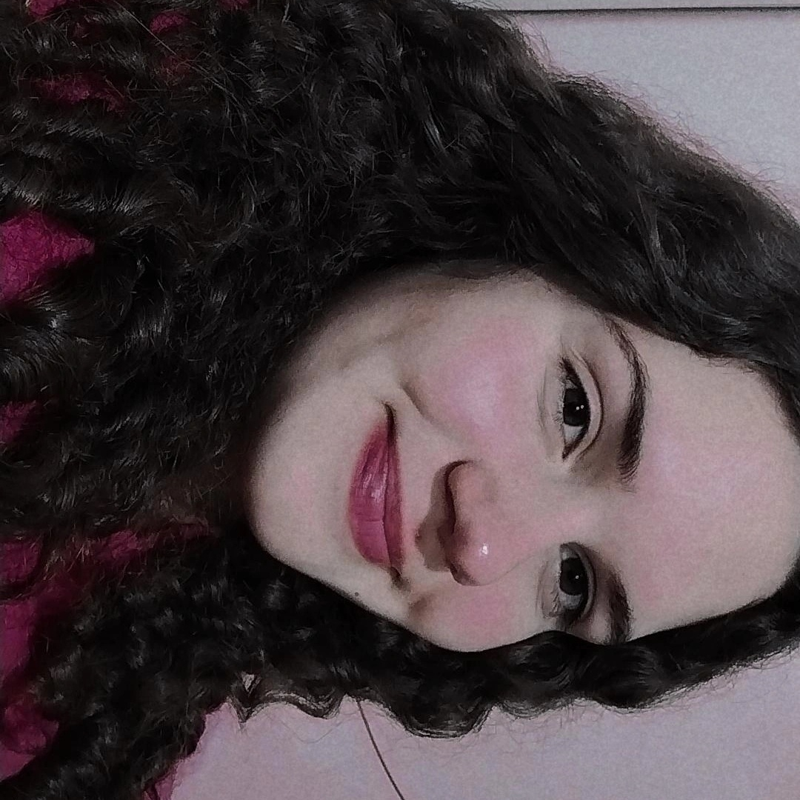

Quem sou eu?
Eu nasci no dia 02 de setembro de 2007, em Cafelândia, mas morei minha vida inteira em Cascavel. Eu estudo no Colégio Wilson Joffre, no 2° ano do novo ensino médio. Eu tenho 15 anos, e quero ser medica.
Eu gosto de fazer crochê e bordar, ler livros, assistir séries. Eu gosto de jogar vôlei e quando eu era menor já fiz ginástica ritmica, ballet, natação.